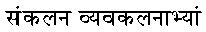

| Sutra/Sub-Sutra # | Sanskrit | English Transliteration | Sub-Sutra (Corollary) | English Translation |
|---|---|---|---|---|
sutra 1 |
Ekaadhikena Purvena | Aanuruupyena | By one more than the one before |
|
sutra 2 |
Nikhilam Navatashcaramam Dashatah | Shishyate Sheshasamjnah | All from 9 and the last from 10 |
|
sutra 3 |
Urdhva-Tiryagbhyaam | Aadyamaadyenaantya-mantyena | Vertically and Cross-wise |
|
sutra 4 |
Paraavartya Yojayet | Kevalaih Saptakam Gunyaat | Transpose and Apply |
|
sutra 5 |
Shunyam Saamyasamuccaye | Veshtanam | If the Samuccaya is the Same it is Zero |
|
sutra 6 |
(Aanuruupye) Shuunyamanyat | Yaavaduunam Taavaduunam | If One is in Ratio the Other is Zero |
|
sutra 7 |
 | Sankalana-vyavakalanaabhyaam | Yaavadunam Taavaduunikritya Vargancha Yojayet | By Addition and by Subtraction |
sutra 8 |
Puuranaapuuranaabyhaam | Antyayordashake'pi | By the Completion or Non-Completion |
|
sutra 9 |
Chalana-Kalanaabhyaam | Antyayoreva | Differential Calculus |
|
sutra 10 |
Yaavaduunam | Samuccayagunitah | By the Deficiency |
|
sutra 11 |
Vyashtisamashtih | Lopanasthaapanaabhyaam | Specific and General |
|
sutra 12 |
Sheshanyankena Charamena | Gunitasamuccayah Samuccayagunitah | The Remainders by the Last Digit |
|
sutra 13 |
Sopaantyadvayamantyam | The Ultimate and Twice the Penultimate |
||
sutra 14 |
Ekanyuunena Puurvena | By One Less than the One Before |
||
sutra 15 |
Gunitasamuchayah | The Product of the Sum |
||
sutra 16 |
Gunakasamuchayah | All the Multipliers |